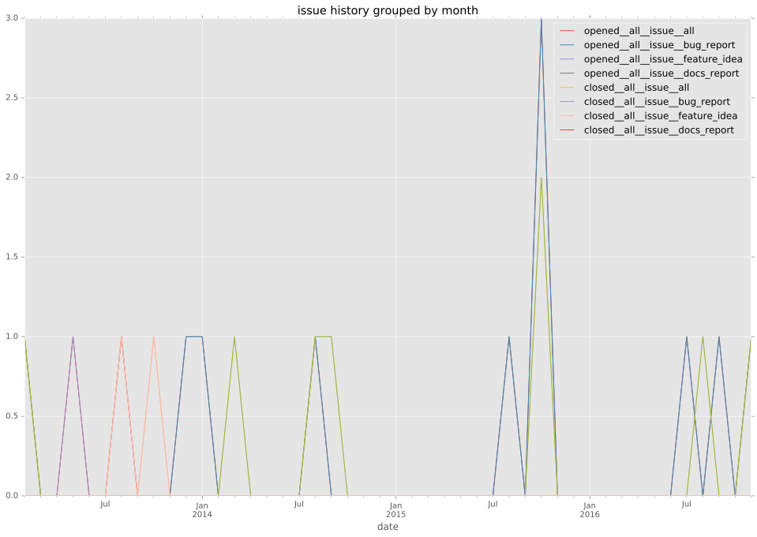
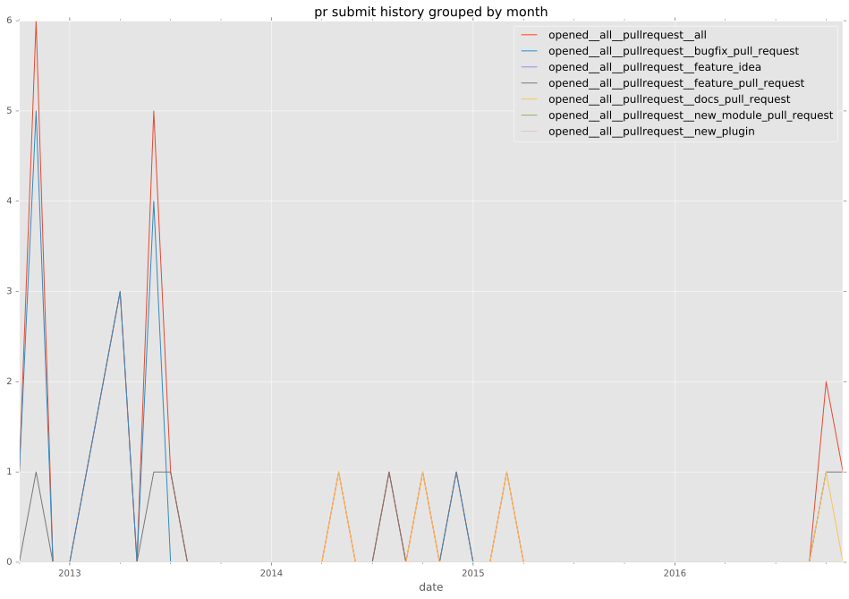
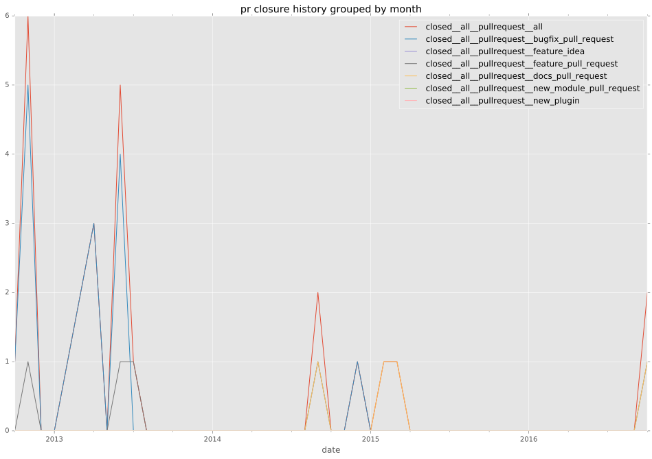
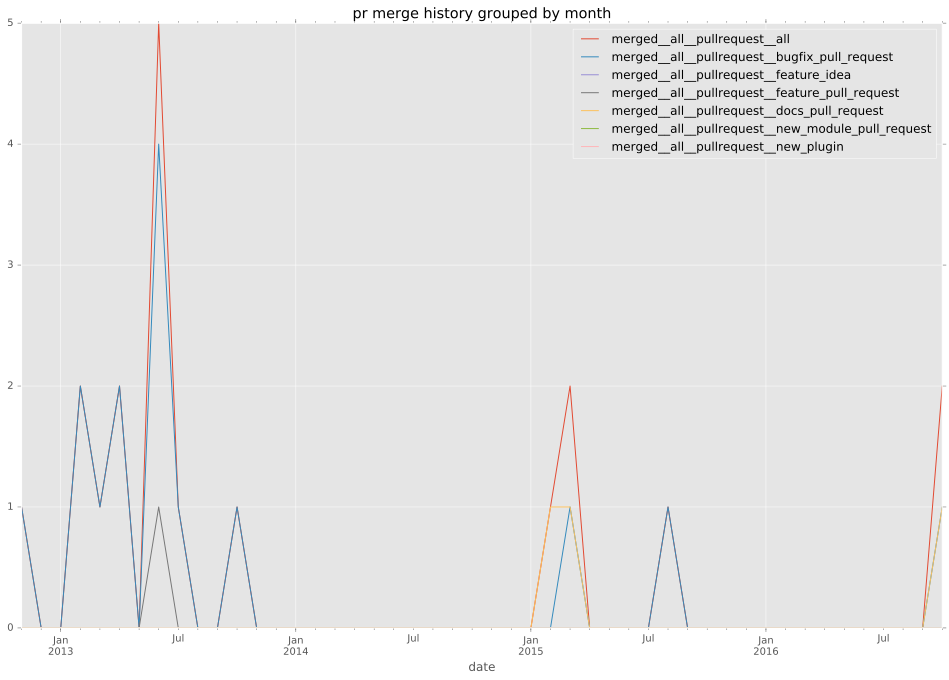
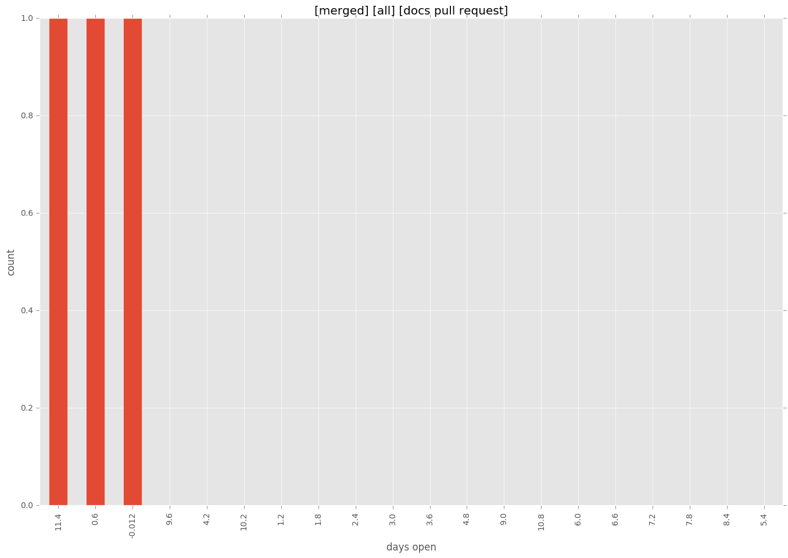
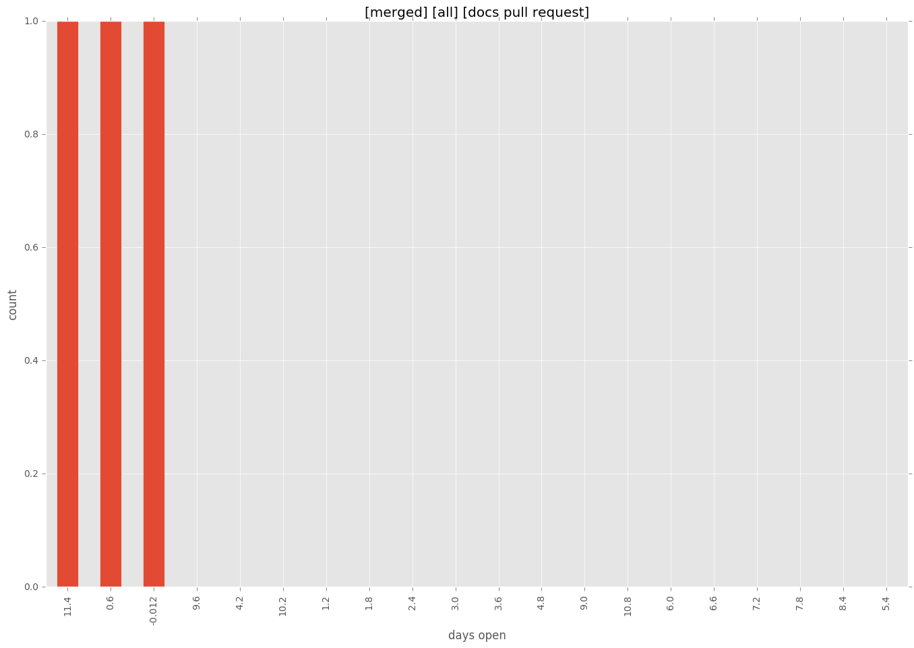

authors
maintainers
- ansible
contributors
- jkleckner : 1 commits
- mpdehaan : 9 commits
- abadger : 1 commits
- mikeputnam : 1 commits
- bcoca : 3 commits
- mavimo : 1 commits
- robparrott : 1 commits
- jpmens : 3 commits
- skvidal : 6 commits
total issue counts
feature pull request: 5
pullrequest: 37
docs pull request: 6
bugfix pull request: 25
feature idea: 3
issue: 16
bug report: 14
issue history

pullrequest history



days open by issue type
bugfix pull request
count: 40
std: 57.3955238137
min: 0
max: 363
median: 0.0
mean: 11.1
all
count: 64
std: 68.1264416623
min: 0
max: 363
median: 0.0
mean: 23.796875
pullrequest
count: 0
std: nan
min: nan
max: nan
median: nan
mean: nan
docs pull request
count: 7
std: 95.6658370629
min: 0
max: 241
median: 12.0
mean: 77.4285714286
feature pull request
count: 5
std: 5.47722557505
min: 0
max: 10
median: 0.0
mean: 4.0
feature idea
count: 2
std: 18.3847763109
min: 51
max: 77
median: 64.0
mean: 64.0
issue
count: 0
std: nan
min: nan
max: nan
median: nan
mean: nan
bug report
count: 10
std: 90.9791795474
min: 0
max: 293
median: 2.5
mean: 38.9
closures grouped by total days open
 
